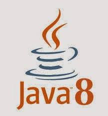
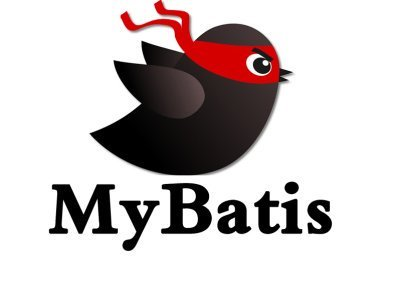
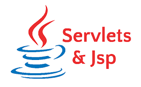
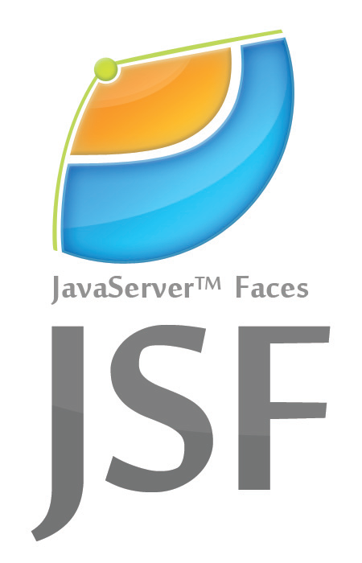

Summary
안녕하세요. 자바를 주로 사용하는 백 엔드 개발자입니다. 그 외로 Android에도 관심이 있으며 최근엔 프론트엔드 쪽으로도 관심을 가지고 있습니다. 저는 운동을 좋아합니다.
MAIN Project
저는 프로젝트의 시작보다는 마무리에 집중합니다.
한번 시작한 프로젝트는 혼자라도 반드시 마무리합니다.
| 프로젝트 | 소개 | 개발 참여도 | 추가 정보 |
|---|---|---|---|
| Android 운동/건강 관리 App |
짐,홈, 트레이닝 집에서! , 보건소에 갈 필요 없는 인바디 상세한 측정,야외 활동 할 수 있는 무료 칼로리측정 , 소통을 위한 게시판!
#Playstore #Google
완료
JAVA8
SQL-LITE
Google-MAPS
FIRSBASE
PHP
JSON
MYSQL
|
(2020-01.17 ~ 2020-03.20)
|
|
| (주)쇼우테크 실습 SHOWRIMS 솔루션 개발 참여 |
솔루션 내에 기능 구현
#ShowRIMS
실습 참여
JAVA8
EgovFramework
Oralce
JSF>
PRIMEFACES>
MyBatis
SVN>
|
(2020-9.8 ~ 2020-11.1)
|
|
| Spring Framework 개인 블로그 |
공부 기록을 남길수 있는 반응형 웹 제작!
#CRUD
부분 완성
JAVA8
Spring boot
Spring Security
Oralce
JPA
thymeleaf>
bootstrap>
|
(2021-1.5 ~ 2021-?.?)
프론트 앤드 무료 템플릿 , 백앤드 단독 개발
|
프로젝트들은 최근 개발한 순으로
정렬되어 있습니다
Awards
다양한 사람들과 협업을 통해서 함께 공동의 목표를 성취해 나가는 것에 관심이 많습니다.
실패를 겁내지 않고 도전하는 것이 행복합니다.
| 대회 | 세부 사항 | 수상 | 증빙자료 |
|---|---|---|---|
| 2020 IPP실습 우수사례 경진대회 |
(주)쇼우테크 OCR 학습형 인공지능 사업 , HWP JPG 이미지 자동 변환 프로그램 제작 및 구동
#검색연관키워드 #검색연관키워드 #검색연관키워드
#검색연관키워드 #검색연관키워드 #검색연관키워드
#검색연관키워드
React
Redux
JavaScript ES6
HTML5 and CSS3
Bootstrap 4
Node.js
Koa
MongoDB
AWS EC2
|
우수상 |

대회 참여 및 수상 실적은 최근
순으로 정렬되어 있습니다
Stacks
만들고자 하는 목표에 대해 필요한 기술들을 빠르게 습득하고 구현합니다.
할 수 있는 경계선을 더 넓혀 나가고자 합니다.
| 기술 구분 | 로고 | 활용 수준 | 평가 |
|---|---|---|---|
| Java8 |  | JAVA 표준 라이브러리을 활용하여 개발에 용이 하도록 할수 있습니다. 필요 하다면 디자인패턴을 이용하여 결합도가 적고 응집도가 높은 모듈들을 작성하여 효율 성 있는 프로그램을 제작 할 수 있습니다. GUI의 형태인 Swing도 자유 자재로 제작이 가능하며 소켓,멀티 스레드 프로그래밍도 활용을 할수 있습니다. | |
| Spring |
|
스프링 단점중 개발 환경을 구성 하는게 힘들지만 개발 문서만 있으면 스스로 개발 환경을 구축 할 수 있습니다. 반복적인 코드를 줄이고자 비지니스 로직에만 집중 할 수 있도록 AOP를 활용하고, DI를 활용하여 개발의 생산성을 증대 시킬수 있습니다. 어노테이션,XML | |
| Android |
|
안드로이드에서 제공하는 레이아웃,엑티비티에 대한 이해를 하여 프론트 구성을 원하는 모양으로 만들 수 있습니다. 저는 리니어 레이아웃으로 프론트를 구성합니다. 안드로이드 내에서 제공하는 Sqllite , Firebase, 구글의 외부 API도 활용해서 시스템을 구축 할 수 있습니다. | |
| JavaScript |
|
ES6 문법을 즐겨 사용합니다. Javascript 프론트에 대한 검증과 간단한 디자인 구성을 할 수 있습니다. javascript에 대한 숙련도는 낮지만 파생되어지는 ajax,jquery,node.js 이해도는 가지고 있습니다. javascript에 대한 프로젝트가 생긴다면 빠르게 숙련도를 올려 잘 할수 있습니다. | |
| React-native |
|
하이브리드 앱을 개발해보기 위해 개발 문서를 보며 학습을 했습니다. 컴포넌트를 분리시켜 java 코드를 짜듯이 구성 할 수 있고 JSX 라는 문법으로 컴포넌트 구조들을 정의를 할 수 있습니다. | |
| Oracle | 다른 DBMS보다 오라클을 사용 한 이유는 데이터베이스가 여러 서버에서 공유 할 수 있다는 거에 매력에 빠져 사용을 했습니다. 오라클을 통해 스스로 개인 DB를 구축 할 수 있고,오라클 PL/SQL에 대한 기초 지식을 가지고 있습니다. | ||
| JPA |
|
SQL로 작성을 하지 않고 엔티티 필드를 통한 객체를 다룰수 있습니다. java의 객채 제향적인 언어 특성을 활용 하여 생산성에 강점을 가지도록 개발을 할 수 있습니다. | |
| MyBatis |  | 자바의 JDBC의 단점을 보완 할 수 있습니다. SQL문을 XML형식으로 분리시켜 저장,관리 하여 데이터베이스와 연동을 하여 , 유지보수를 용이하도록 개발 할 수 있습니다. (주)쇼우테크 실습을 할 때 실무로 사용을 해보아 숙련도가 높습니다. | |
| thymeleaf |
|
Spring boot에서 권장하는 thymeleaf 템플릿 엔진을 이용 할 수 있습니다. html 태그에 추가하여 값을 처리하거나 페이지에 심어 웹 페이지를 생성 할 수 있습니다. | |
| JSP/Sevelt , JSTL |  | MODEL1,MODEL2,MVC에 대해 공부를 했을때 사용을 해보았습니다. 서브릿을 이용하여 VIEW에서만 담당을 하거나 필요로 하다면 비즈니스 로직으로 활용 할 수 있습니다. 하지만 활용할 기회가 없어 숙련도는 높지 않습니다. 필요로 하다면 빠르게 숙련도를 높일수 있습니다. | |
| JSF / PrimeFaces |  | JSF를 활용하는 UI컴포넌트를 개발을 하고 컴포넌트 바인딩, 값 바인딩을 해보았습니다. Swing과 같은 Event driven의 웹 개발을 할 수 있습니다. Primefaces 프레임워크를 이용하여 해당 개발문서에 있는 요소들을 해보았습니다. | |
객관화하기 어려운 관계로, 제가
이해하고 구현할 수 있는 수준을 작성했습니다.
Front End
JavaScript를
주로 사용할려고 노력 하고 있으며 React에 관심이 많습니다.
Back end
JAVA를 가장 많이 사용하며 Spring
프레임워크를 활용하고 있습니다. Node.js에 대해 공부를 해보고 싶습니다.
Data base
Oracle를 가장 좋아합니다 가끔은
MySQL도 함께 사용합니다
Utilities
SqlLite,SqlMapper,DBeaver,GitHub
사용해보았습니다.. 더 많이 알수록 효율은 더 높아진다고 믿습니다.
Document
가장 중요한 자산은 태도라고 생각합니다. 문제를 대하는 태도, 개발을 대하는 태도, 팀원을 대하는 태도가 오랜 시간과 결합하면 엄청난 능력이 된다고 믿습니다.